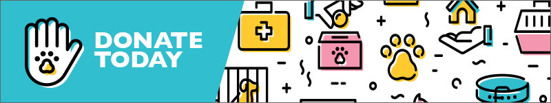

Where do we find our dogs? o Pet adoption usually refers to the process of taking guardianship of and responsibility for a pet that a previous owner has abandoned or released to a shelter or rescue organization. Common sources for adoptable pets are:
- Animal shelters, in the case of dogs also known as dog pound.
- Pets found loose or stray without identification, and which are unclaimed by any owner.
- Advertisements placed by individuals trying to find a new home for their pet.
- Pets that have been abused or neglected and have been confiscated from the offending owner.
- Dogs adopted from shelters are often referred to as shelter dogs or pound puppies; dogs adopted from rescue organizations are often called rescued dogs or rescue dogs.
We strive to provide the best care for the animals in our program, and we include MORE in our adoption fees than many small, no-kill rescues. When considering adoption, please check into what is included in the adoption fees. We hold all animals in our care for a minimum of 21 days to properly screen for health conditions, and to provide as much pre-adoption care as possible.
“Any glimpse into the life of an animal quickens our own and makes it so much the larger and better in every way.” ~ John Muir